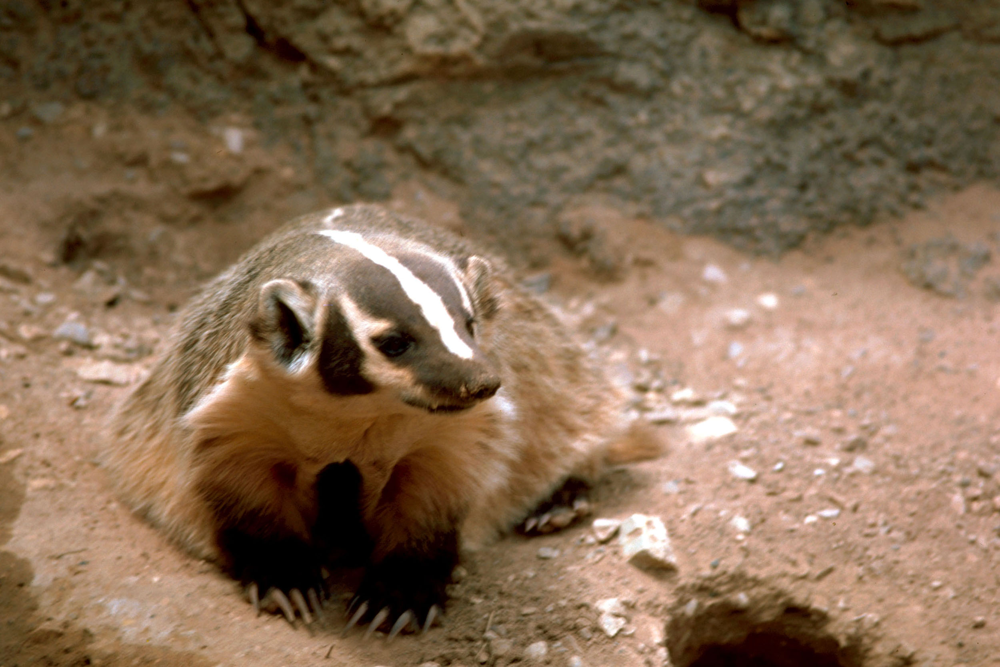

Jezevec je české rodové jméno sdružující 5 rodů z čeledi lasicovitých šelem. Jediným českým zástupcem je jezevec lesní. Současné genetické studie naznačují, že tato skupina není jednotná: „smrdutí jezevci“ – rod Mydaus – ve skutečnosti nemají se zbytkem této skupiny nic společného a patří spíše k jiným smrdutým šelmám, totiž ke skunkům. Nejenže by tak nebyli opravdovými jezevci, ale nepatřili by ani mezi lasicovité šelmy; vhodnější české jméno by pak pro ně bylo označení telagon, používané ve starší literatuře.
| Jmeno | Prijmeni |
|---|---|
| Vasek | Nestihal |